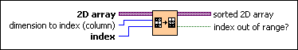

Sort 2D Array VI
Owning Palette: Array VIs and Functions
Requires: Base Development System
Rearranges the rows or columns of a 2D array by sorting the elements in the specified column or row in ascending order.
This VI rearranges the elements in the specified column or row in ascending order by comparing the elements using comparison rules for different data types.

 Add to the block diagram Add to the block diagram |
 Find on the palette Find on the palette |